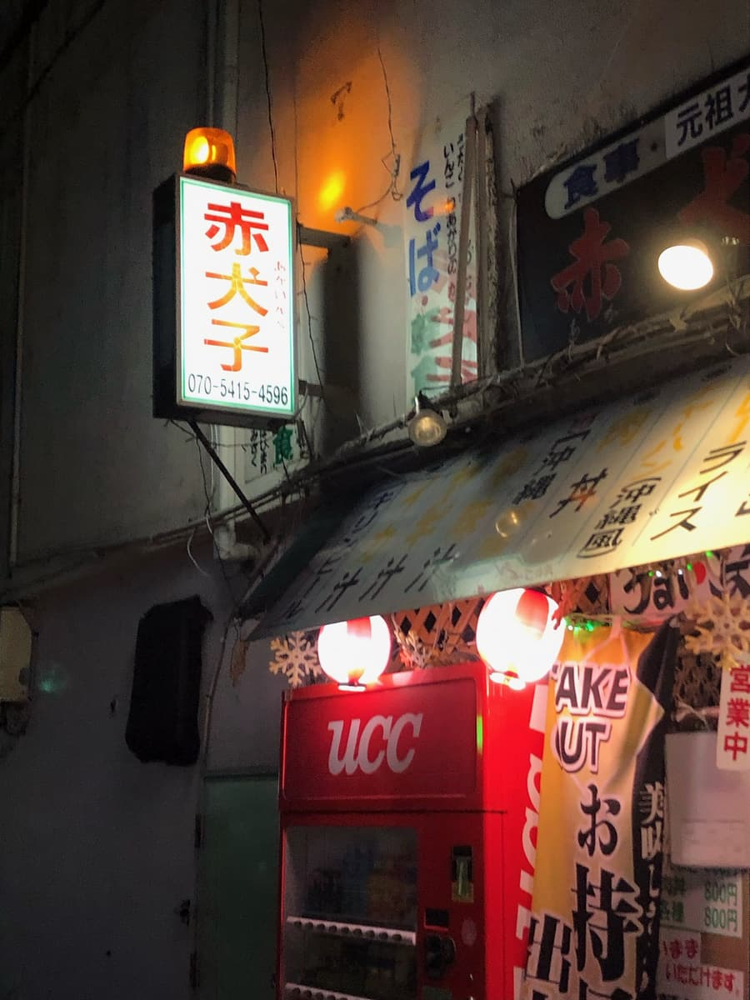
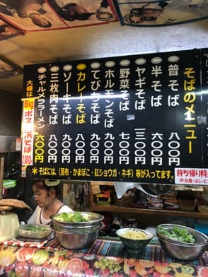
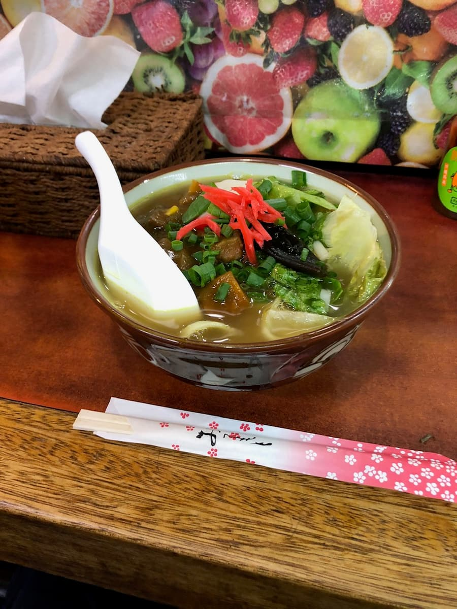
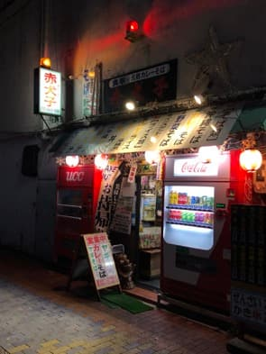
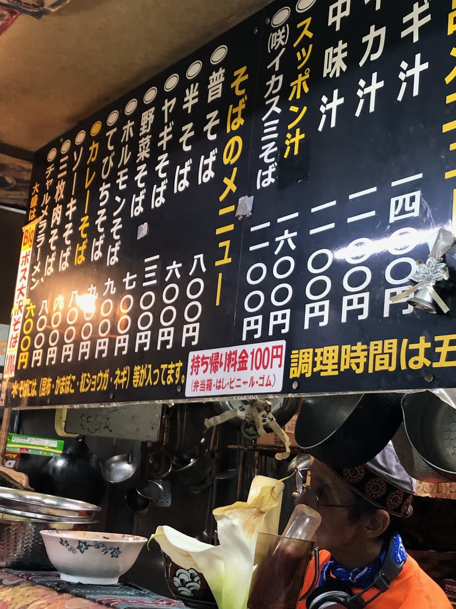
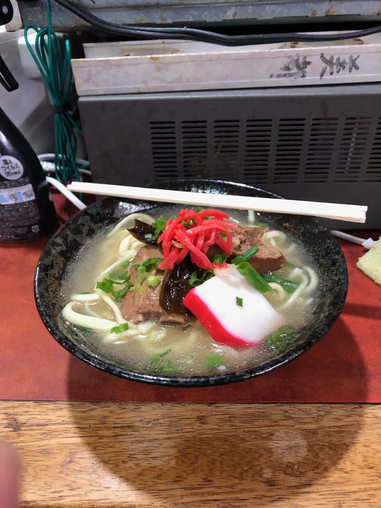

― 2번째 방문(2023년 4월)―
2023년 4월에 술자리 마무리로 재도전^^;



지난달에 이어 이번에는 취기를 억누르면서 도전😄 국물은 묽은 수프 카레 같은 육수로 평범하게 맛있어요😋 면은 보통 굵기의 스트레이트 타입이고 카레 건더기가 감겨서 맛있습니다.
평가(9점/15점): 취한 사람의 맛 감상이지만 평범하게 맛있습니다. 나고 중심 시가지에서 술 마신 뒤 마무리로 어떠세요 ㅋㅋ 과음에는 주의합시다(｡>﹏<｡)
면: ★★★☆☆（3）
수프: ★★★☆☆（3）
토핑: ★★★☆☆（3）
― 1번째 방문(2023년 3월)―
(1번째) '나고시 소바 맵'에서 소개되어 2023년 3월에 먹었습니다😄

이 가게는 잔뜩 마시고 나서 들어갔어요 ㅋㅋ 기억도 가물가물하지만, 주인에게 상담했더니 보통 소바를 권해서 보통 소바를 주문.


죄송합니다, 마시고 취한 채로 가게에 들어갔기 때문에 맛의 기억이 없습니다 ㅋㅋ m(_ _)m
코멘트할 수 없지만, 소바 맵을 보니 '카레 소바'가 사진으로 소개되어 있어서, 다음에는 과음하지 않고 다시 조사하겠습니다^^;
평가(－점/15점): 과음해서 맛의 기억이 없어서 죄송합니다, 미평가입니다. 평범하게 맛있었던 것 같아요.
면: ★★★☆☆（－）
수프: ★★★☆☆（－）
토핑: ★★★☆☆（－）